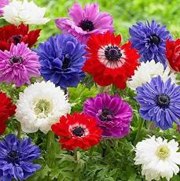
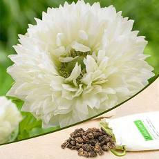

anemone

ginnienterprises Anemone Multiflora Mixed (Winter)
range: ₹ 290.
Product Details:
- Anemone Rubra is a charming, low-growing Anemone .
- that is attractive to bees, butterflies and birds.
- This lovely red blooming Anemone is easy to grow from flower seeds.
- and it is considered to self-sow freely.
- Striking, carmine-red flowers float above light green cut-leaved foliage

Anemone Mount Everest (White) - Bulbs (set of 5) (100 per packet) (Bunch of 10)
range:₹ 390
Product Details:
- emone flower can beautify every place with its simplicity and beautiful scent.
- Anemone is perennial flowering plant that have basal leaves with long leaf-stems.
- that can be upright or prostrate.
- Anemone flower is a plant that can be increasingly found in gardens and terraces.
- This beautiful flower can beautify every place with its simplicity and beautiful scent.